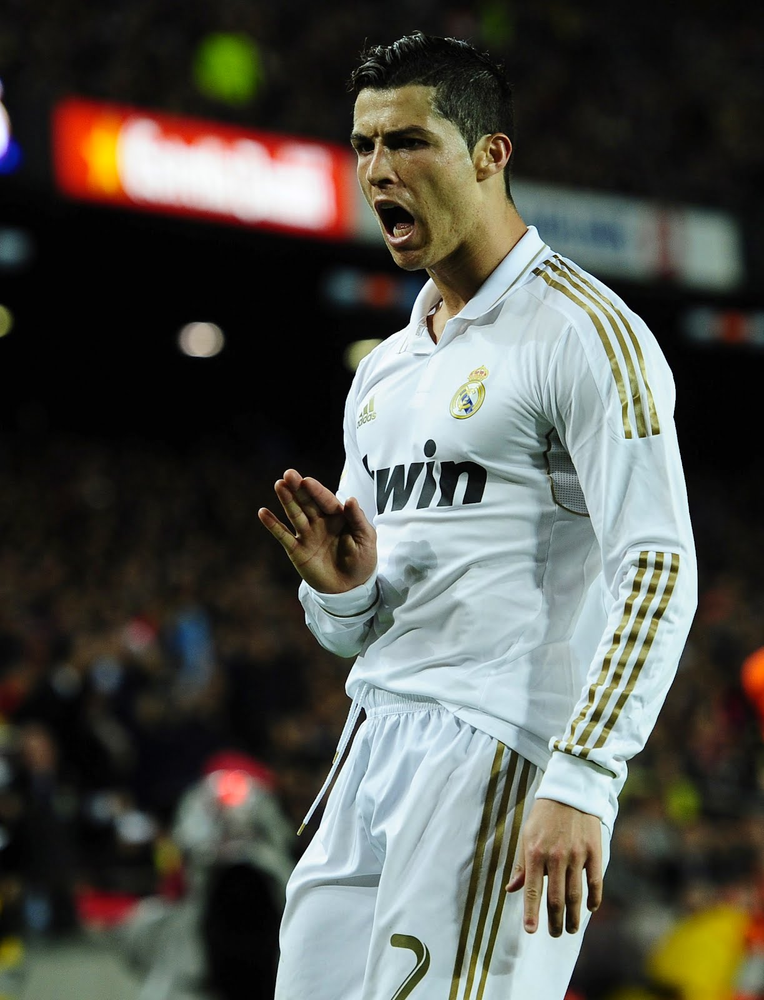
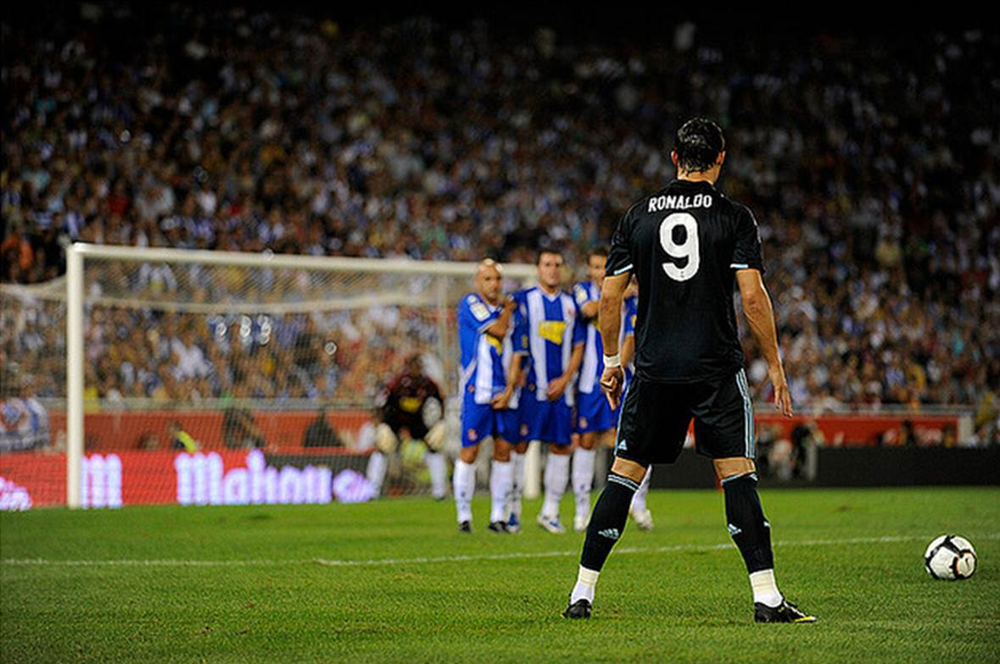

Cristiano Ronaldo is a Portuguese footballer who plays as a forward for Spanish La Liga club Real Madrid and who serves as captain of the Portuguese national team.
Ronaldo's Fansite
Cristiano Ronaldo
Gallery
View some of the most famous photos of Messi.
- 
- 

Fun Facts
Here are some Fun Facts about Ronaldo.
- His full name is Cristiano Ronaldo dos Santos Aveiro. The name Ronaldo was inspired by Cristiano’s father’s favorite actor and US President, Ronald Reagan.
- Cristiano’s father, Jose Dinis Aveiro passed away at the age of 52 from alcoholism. While Ronaldo has sworn off alcohol as a result, he has been spotted by the press drinking the gin and juice.
- Cristiano is a known Fashionisto. Along with his two sisters, Ronaldo opened up the fashion boutique CR7 in Portugal.
- Liverpool thought Cristiano Ronaldo wasn’t good enough for them a year before he signed for United for £12.2 million in 2003.
- Cristiano Ronaldo as a teenager used to train in the gym using weights on both foot and then dribbling with football. He did this because it would improve his speed without weight.
- The great manager Jose Mourinho likened Cristiano Ronaldo to Marco van Basten, the former Holland forward. Mourinho said: “I remember the first time I saw him play. It was for Sporting youth. I told my assistant, ‘There goes Van Basten’s son.’ He had great technique. He stood out.”
- There is only one Cristiano Ronaldo but there are two Ronaldos. As coach of Brazil, Luiz Felipe Scolari, who worked with the other Ronaldo, said: “I hoped Cristiano would be as good one day. He just doesn’t stop, no matter how much you demand of him.”
- Cristiano Ronaldo was a great player even at 12 years old. His first coach at Sporting Lisbon, Paulo Cardoso, said: “When he got the ball he went past two or three players. At the end of the game the players surrounded him, they knew he was a special kid.”
- Cristiano Ronaldo was given the nickname “cry-baby” as a child. His mom Dolores Aveiro said: “When he got home from school I’d tell him to do homework but he’d say he didn’t have any. I’d be making dinner and he would jump out of the window and run off until late. He used to cry when he passed and his friends didn’t score. People called him ‘cry-baby’ and ‘little bee’ because nobody could catch him”.
- Cristiano Ronaldo’s football hero as a kid was Diego Maradona.